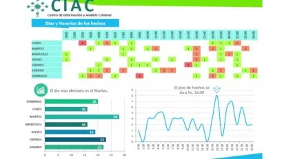

Mapa de calor delictivo de la provincia
Visualización Geoespacial
Plataforma de análisis territorial que permite visualizar patrones delictivos y asignar recursos policiales de manera estratégica.
Mapas de Calor
Visualización de densidad delictiva por zonas
Análisis Temporal
Evolución de delitos por franjas horarias
Tendencias
Proyecciones y predicción de patrones
Filtros Disponibles
Por Delito
- Robos
- Homicidios
- Narcotráfico
- Violencia de género
Por Zona
- Departamentos
- Barrios
- Radios censales
- Áreas operativas
Por Tiempo
- Últimas 24 horas
- Semana actual
- Mes en curso
- Personalizado
Reportes Generados
Reporte Semanal
Análisis comparativo y evolución delictiva
Descargar
Informe Mensual
Estadísticas completas por categoría
Descargar
Alerta Temprana
Zonas con incremento delictivo
Descargar
Caso de Éxito
En el barrio Alto Comedero, el análisis de patrones permitió reducir los robos en un 32% mediante la redistribución estratégica de patrulleros en horarios clave.
32% reducción
45 días de implementación